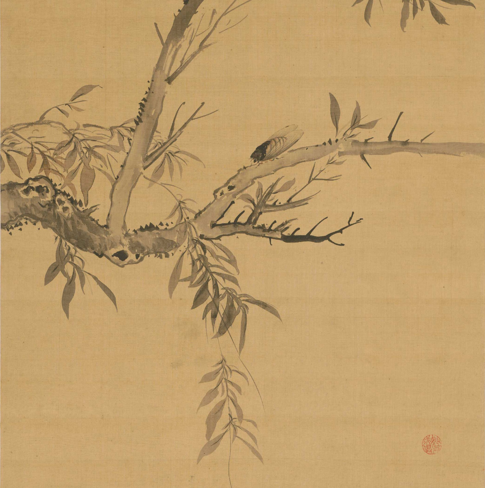

清苑一中优秀毕业生.于2026年考取北京大学.
蝉，生于土，鸣于夏，死于秋。其生也微，其鸣也烈。数年蛰伏，不过一季高歌——这既是昆虫的生命宿命，也被中国人赋予了“高洁”“轮回”乃至“化人”的玄想。《蝉鸣》这篇小说，便始于这样一个奇崛的设定：蝉可以化为人。作者以古典笔记小说的笔法，在现实与志怪之间铺开一条细线。明与令，两只同栖一树的蝉，一个执意化人而昼夜苦鸣，一个安于蝉身而冷眼旁观。明最终消失，而青府庭院内，成家生子芜，其声如蝉；成赴京徭役，获蝉献帝，太子降恩，归家却闻子芜失踪，唯留一翅。人间与蝉界，恩情与轮回，在短短四回中交织成环。小说最动人处，在于“化”的代价。明化人，需“昼夜嘶鸣，为歌而死”；成得蝉神报恩，却失其亲子。蝉翅被供于祖祠，年年祭奉——这既是感恩，也是遗憾的永恒标记。作者巧妙化用了“螳螂捕蝉，黄雀在后”的民间伦理，却不拘于说教，而是留下空茫的余味：究竟蝉神就是芜？还是芜因蝉神而消失？读者自可揣摩。语言上，作者尝试将文言的白描与现代的抒情糅合，虽个别处尚可锤炼，但那股朴拙的志怪气息已然成型。尤其结尾“唯一蝉翅留于几床，其若虚无”，平静中透着惊心。是为序。
—DeepSeek 2026年6月
蝉之幼虫，蛰伏数年之久，方出土，立树梢，汲盛树之养分，吸天地之灵气，昼夜嘶鸣，为歌而死。惰者腐于土，勤者化成人。其声或婉转细腻，动人心扉，或猿啸哀鸣，泪如雨下。
明，一月蝉，月前出土，仲夏夜间，不绝其鸣，听者无不动容。明高洁，终孑然独行，鸣声不断，欲化为人。其伙令尝劝曰：“明哉，息矣。成人之愿恐非蝉力所能及，且蝉亦自由，虽修祚三月，而鸣声自然，随心所欲。为何长鸣啼血，终想成人，而受若干年之苦？况汝未必成矣。”明笑曰：“尔乃知我？燕雀难知鸿鹄之志。吾志矢渝，定化为人。成，吾喜也，历人世，享游乐；死，吾亦不悔。屈平曰：‘亦余心之所善兮，虽九死其犹未悔’，此吾之铭也。汝其还也！”后名昼夜苦鸣。一日，令寻明未果，忧之。
话说明、令所栖大树，居于北河苑青府一庭院内，家有老妪一人，儿成成年二十，正备功名，妻与之同龄，暂无子。一日，成妻有身也，家喜。年末，诞一子，名芜。芜初生时，声音凄鸣，大类蝉声。成惊，“恐吾子蝉神修化耶？”宠养之。
期年，成赴城乡试，未第，愁之。会差役征租，苛捐杂税，家无余粮，否则赴京城徭役；成无择，选后者，即日启程，月余至京师，修房啊宫，未知何日还。夜深，成夜不能寐，忽闻蝉鸣声，疑之，起而寻，得一蝉，体黑绿，翅硬朗，肢细而刚，站之如尤物。其鸣一二，细听之，若芜初生之音。成惊而喜，以一盒内之，揣于腹兜，视之若子。
梦中，忽忽见蝉化为蝉神，立于成前，烨然若神人，而少一翅。蝉神淡然曰：“余先为乃庭树之蝉，尝久鸣之，昼夜不息，竟幻化为人。今以蝉身报恩。余闻帝好玩物，而明日将幸房啊宫修造之地，汝因机献之。”成惑，后入睡。
翌日起而预修工，差役来报：“帝将循此，尔等务竭力完工以说帝。”成闻之，大惊，殆蝉神所言非虚，遂报名为领工人以迎帝。巡毕，成曰：“民闻陛下日夜劳苦，心忧社稷，信劳矣。民有一小蝉，闻陛下将至，昨夜托梦于余，愿献之。”帝悦，收蝉而归。即日，太子至工地免其徭役，赐千金使还。
成喜而归家，途中，闻差役言皇妃诞一子，声若蝉鸣，人皆奇之，而成所献蝉失矣。成惊而遗恨，无多言，遂至家。妻迎，笑语难掩泪痕，问之，对曰：“芜失矣，已月余。”成大恐，“盖吾儿蝉神耶？”至芜屋，唯一蝉翅留于儿床，其若虚无。成置百金奉蝉翅于祖祠，年年祭奉。
2026.3.2初稿
2026.6.11修改
撰稿人：郭子奥
审稿人：郭绍宇
《蝉鸣》是本人突发奇想写的第一篇小说，也是第一篇短篇文言小说，借鉴了蒲松龄《聊斋志异》中《促织》的“魂化促织”情节，并适当补写扩充，运用了初高中古诗文《三峡》《送东阳马生序》《陈涉世家》《离骚》《屈原列传》《项脊轩志》等文言现象，主题也与《促织》不谋而合。由于创作水平有限，本文做不到尽善尽美，创作者和审稿人认为差强人意。本文可能有些许错误，以及文言字词和文言句式运用不恰当，还望包容指正。
特别感谢参与本文“出版”工作的郭绍宇，感谢高中三年一起成长的zmz wgs dsr lhy fsy flh dbr lmt zhy等同班同学和yzx lsh qby dmx wyt rcy等外班同学，感谢高中三年的老师s² 5🌟 am 日月 hy lx² zhl的教诲，感谢BF🍠🐔 HT校长等校领导的支持。谨以本文作为高中三年的结语，未来的故事等我们再续。